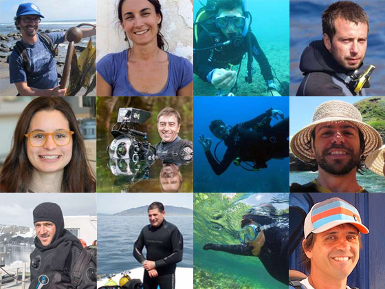

Project Marine Forests
Project 'Marine Forests' aims to build and maintain a database of distribution records of structural benthic species of seaweeds, seagrasses and animal forests, at global scales, and to make this information freely available worldwide.
It also promotes education, marine literacy and the FAIR principle (to make data Findable, Accessible, Interoperable and Reusable).
It also promotes education, marine literacy and the FAIR principle (to make data Findable, Accessible, Interoperable and Reusable).
Why Marine Forests?
Many animals live in marine forests and use them to hunt or mate.
Young animals also use marine forests as nursery grounds.
Young animals also use marine forests as nursery grounds.


Scientific team and support
The team of the project is composed by scientists and volunteer citizens from all around the world.
Support statment about adopting marine forests.
Support statment about adopting marine forests.